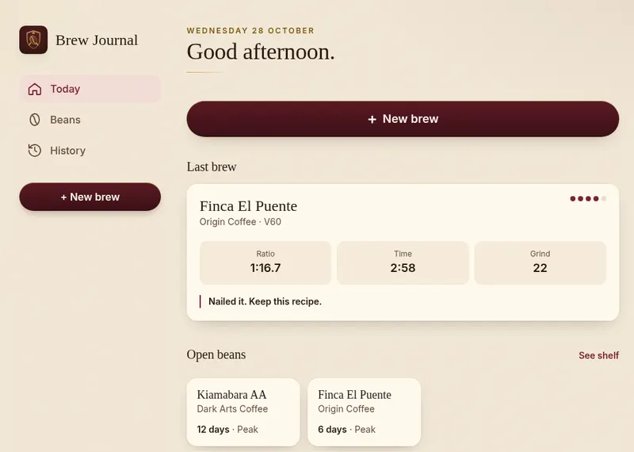
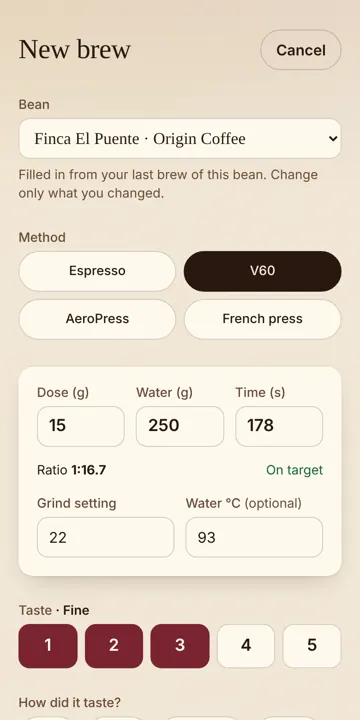
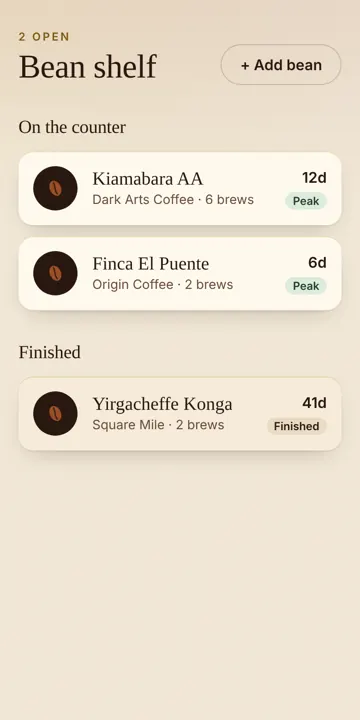

Brew Journal
A phone app for logging coffee brews that installs from the browser and works offline. It keeps everything on the device and suggests what to change next time.

What it is
Brew Journal logs each coffee you make: beans, method, ratio, grind and time, with a quick rating. After each brew it suggests one thing to change next time.
Why I built it
I wanted a simple brew log that works with no signal and no account. It also shows how a small business, like a cafe, could offer an app without app store fees.
Screenshots


How it's built
Vue and TypeScript, built with Vite as an installable web app (PWA). Data stays in the browser's own storage on your device.
Status and limits
Data lives on one device. There's no sync or backup between phones yet.